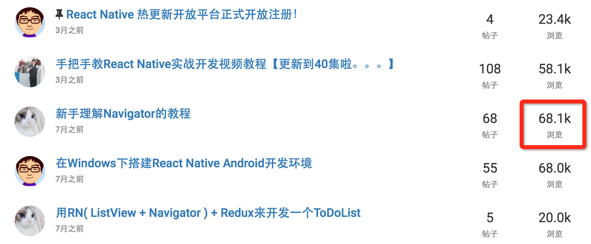
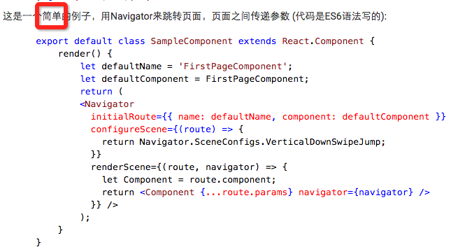
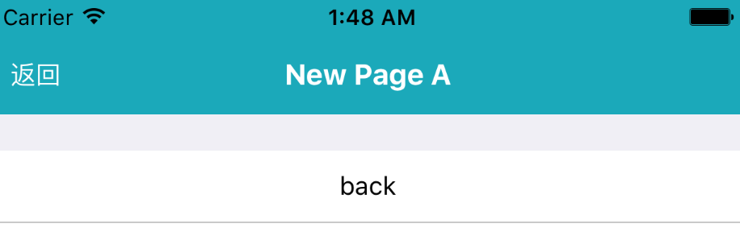

Qunar React Native Extension
于明昊
现阶段遇到的问题
Navigator

点击第一是如何写 ES6 😂
页面跳转
数据流管理
- 父组件如何跟子组件通信？
props - 子组件如何跟父组件通信？callback
- 小叔子组件如何跟二大爷组件通信？我选择屎亡
组件间存在严重「代沟」
原生 Navigator

↑ 简单的例子
页面跳转 API
open(name[, opts])打开一个新的页面（新建历史）back([opts])回到上一个页面backTo(name[, opts])回到指定页面goto(name[, opts])前往指定页面（历史中有则回退）home([opts])回到首页close(name)关闭指定页面
导航栏 NavigatorBar

拥有丰富的转场动画
可以按页面定制
数据流管理
如何解决组件「代沟」？
发布订阅模式 Pub/Sub publish and subscribe
Facebook 的解决方案：Flux

问题？
store尺寸根本控制不住- 异步处理太恶心
- 各种反模式如 reflux 就需要使用
mixin
Redux
三大原则
- 单一数据源
state是只读的- 使用纯函数来执行修改
简单对象 action
描述事情的发生，例如：
- 江南皮革厂倒闭啦
- 带着小姨子跑路啦
- 统统二十块！
可控的 reducer
- 执行修改的纯函数
action的调度器- 可以自由拆分组合

异步处理？跑路之前，要先等小姨子化一个小时的妆（误
使用中间件（Middleware）进行自由扩展
- redux-thunk
- redux-promise
- ...
更好的接入 react
react-redux
Ext - Redux
Ext - Redux
Q&A
- EOF -